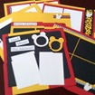
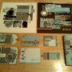
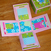

Cozy Crop House Classes
Below is a list of the classes available at the Cozy Crop House during a Cozy Crop Weekend. Please keep in mind not all classes are available every weekend due instructor schedules. But if you let us know early enough we will do the best to accommodate you.
Basic Supplies you’ll need to bring to class:
- Scissors
- Adhesive
- Trimmer
- Journaling Pen

“Gotta Love the Mouse!” Class - 6 pages!
$25 1.5 Hours | Instructor: Rut Lopez
This class was inspired by Rut’s last trip to Disney. So if you’re working on your Disney album this is the class to be in! You’ll create THREE 2-page layouts, using various techniques from paper tearing to ribbon as embellishment and rounding corners in interesting ways! You can’t miss this class! All embellishments and papers (cut to size) are provided. So come and join the Disney fun in the “Gotta Love The Mouse!” page class.

Cricut 101
$15 2 Hours | Instructor: Kate Rothacker
This fantastic class covers everything you’ve ever needed to know about using your Cricut and then some! You’ll get to create a cool, hands-on make and take, plus learn tips on using the Cricut, such as how to keep the cutting mats sticky longer, online resources, etc., and where to download the newest Cricut ‘cheat sheet’ to help you find what can be cut on each cartridge.

Rut’s “Just 6 Sheets of Paper” Class
$20 2 Hours | Instructor: Rut Lopez
Using 3 sheets of 12”x12” cardstock, 3 sheets of 12”x12” patterned paper, ribbon and some embellishments, you will create a 2 page layout, 3 tags, 2 cards, 1 notebook cover and 1 index card book.
 Explosion Box Class
$15 1.5 Hours | Instructor: Rut Lopez
This explosion box album is a cool little album. The end product is a 4x4 square shaped album. When you take off the lid, it opens/explodes into a mini album.